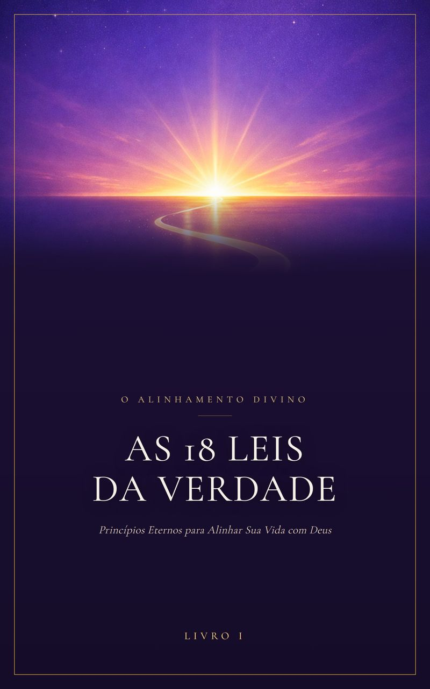

GratuitoLivro I
As 18 Leis da Verdade
Princípios Eternos para Alinhar Sua Vida com Deus
O mais didático dos três. Cada lei abre com uma narrativa, define o princípio, mostra o versículo que a sustenta, liga à pessoa de Jesus e fecha com questionário. É o volume que ensina a ler os outros dois.
- 18 leis · 143 páginas
- Quadro de comparação em cada lei
- Questionários de estudo